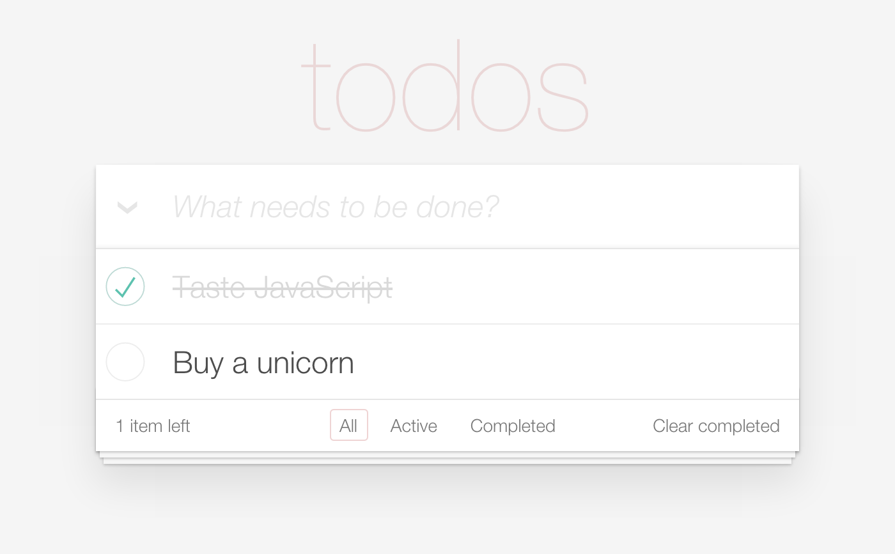

This work by Sindre Sorhus is licensed under a Creative Commons Attribution 4.0 International License.
CSS for TodoMVC apps

$ npm install --save todomvc-app-css
<link rel="stylesheet" href="node_modules/todomvc-app-css/index.css">
See the TodoMVC app template.
This work by Sindre Sorhus is licensed under a Creative Commons Attribution 4.0 International License.